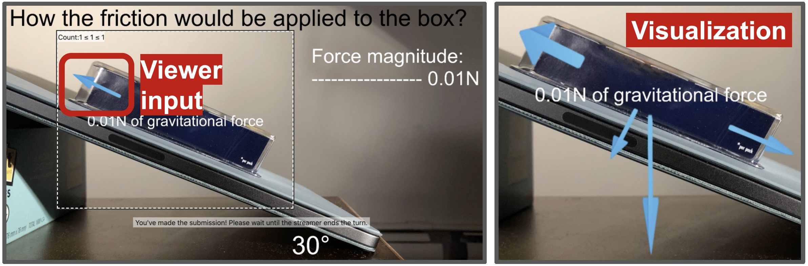
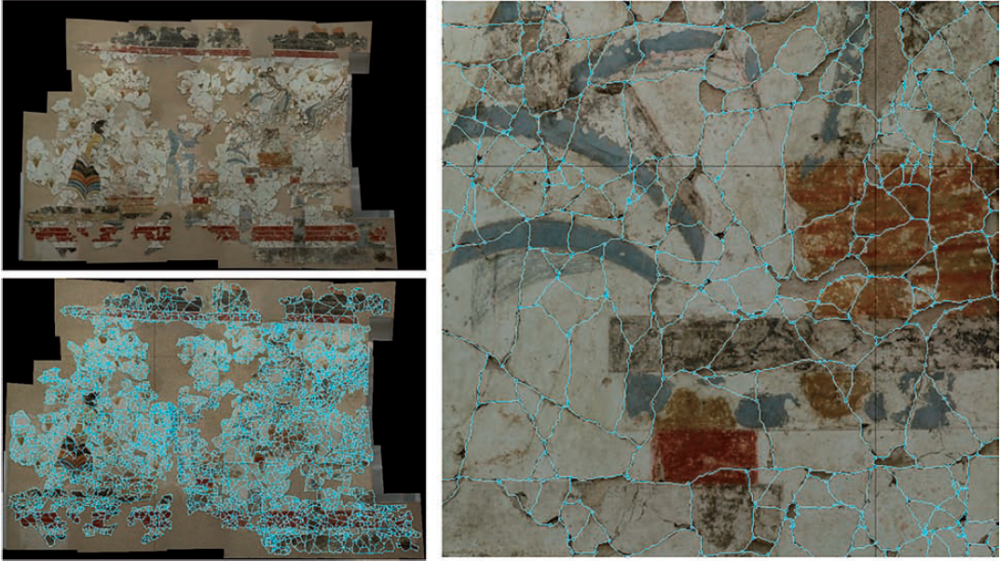
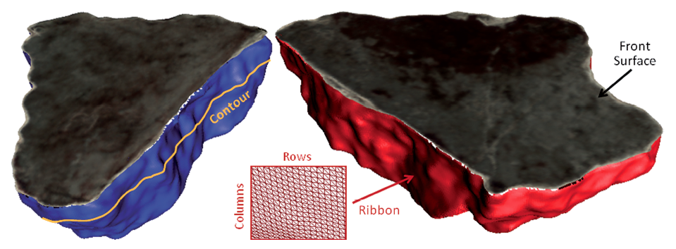

Research Scientist
Adobe Research
One Broadway, Cambridge MA 02142
vshin [at] adobe [dot] com

I am currently a research scientist at
Adobe Research.
My research develops novel algorithms, interactions, and interfaces for authoring, editing and consuming audio visual media effectively.
I received my PhD in Computer Science from MIT, where I was advised by Fredo Durand in the Computer Graphics Lab.
Before joining MIT, I completed my B.S. in Computer Science at Princeton University.
Publications
2021
|
Multi-level Correspondence via Graph Kernels for Editing Vector Graphics Designs
To Appear in Graphics Interface 2021
|
|  |
Beyond Show of Hands: Engaging Viewers via Expressive and Scalable Visual Communication in Live Streaming
[paper]
To Appear in CHI 2021
|
2020
|
Snapstream: Snapshot-based Interactions in Live Streaming for Visual Art
Proceedings of the 2020 CHI Conference on Human Factors in Computing Systems (CHI 2020)
|
|
Temporal Segmentation of Creative Live Streams
[pdf]
Proceedings of the 2020 CHI Conference on Human Factors in Computing Systems (CHI 2020)
|

|
Generating Audio-Visual Slideshows from Text Articles Using Word Concreteness
Proceedings of the 2020 CHI Conference on Human Factors in Computing Systems (CHI 2020)
|

|
Pose2Pose: Pose Selection and Transfer for 2D Character Animation
|
2019

|
B-Script: Transcript-based B-roll Video Editing with Recommendations
Proceedings of the 2019 CHI Conference on Human Factors in Computing Systems (CHI 2019)
|
2018
|
DynamicSlide: Exploring the Design Space of Reference-based Interaction Techniques for Slide-based Lecture Videos
Proceedings of the 2018 Workshop on Multimedia for Accessible Human Computer Interface
|

|
On Learning Associations of Faces and Voices
[pdf]
In Proceedings of Asian Conference on Computer Vision (ACCV 2018)
|
2017

|
Designing effective interfaces for audiovisual media
[pdf]
Ph.D Thesis, Massachusetts Institute of Technology
|
2016
|
VoiceScript: Dynamic Authoring of Audio with Linked Scripts
Proceedings of the 29th Annual Symposium on User Interface Software and Technology, of UIST '16, pages 509–516, New York, NY, USA, 2016. ACM
|
|
Reconciling Elastic and Equilibrium Methods for Static Analysis
ACM Transactions on Graphics (TOG) Volume 35 Issue 2, May 2016 (Presented at SIGGRAPH 2016)
|
2015
|
|
VisualTranscripts: Lecture Notes from Blackboard Style Lecture Videos
ACM Trans. Graph., 34(6): 240:1–240:10. October 2015
|
2012

|
Structural Optimization of 3D Masonry Buildings
ACM Transactions on Graphics, Proceedings of SIGGRAPH Asia 2012
|
|  |
Analyzing and Simulating Fracture Patterns of Theran Wall Paintings
ACM Journal of Computing and Cultural Heritage, 5(3), October 2012
|
2011
|  |
Learning How to Match Fresco Fragments
ACM Journal of Computing and Cultural Heritage, 4(2), November 2011.
(Original version appeared as an area paper at Eurographics, April 2011)
|